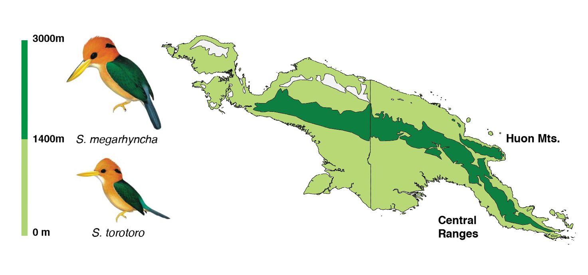
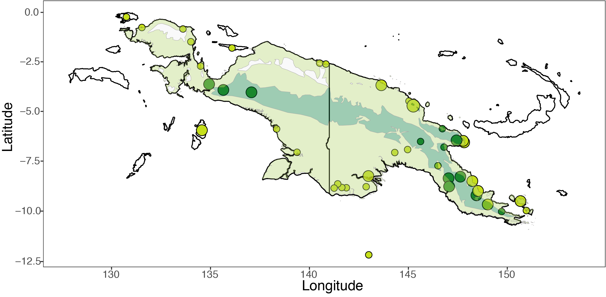
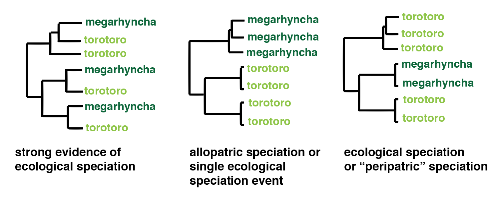

class: center, middle .title[Why are there so many bird species in tropical mountains?] .subtitle[*Insights from genomics and New Guinea kingfishers*] .author[Ethan Linck<sup>1</sup>,] .coauthor[Ben Freeman<sup>2</sup>, Jack Dumbacher<sup>3</sup>, John Klicka<sup>1</sup>] .institution[*<sup>1</sup>University of Washington, <sup>2</sup>University of British Columbia, <sup>3</sup>California Academy of Sciences*] .center[<img style="width:2%" src="../figures/twitter-512.png"> @ethanblinck] .center[URL: http://elinck.github.io] ??? Hi everyone, and thanks for coming. I'm a Ph.D. student at the University of Washington in Seattle in the United States, and because I've been staying in Fiji as I wait for a visa issue to be resolved Professor Holland was kind enough to invite me to talk to you. Today I'm going to be talking about one of the chapters in my dissertation, which looks at the origins of high bird species richness in tropical mountains by zooming in on a pair of kingfisher species in New Guinea. Because this work is ongoing, I'm going to be focusing a lot on inference: how by using multiple lines of data, we can begin to understand events and processes in the distant past. And because PaCE is an audience with such a diverse range of interests, I'm also going to make sure we're all up to date on some of the terms in conceptual issues in my field -- so I apologize to any evolutionary biologists in the room who might find this redundant! --- class: center ## Outline -- -- **1. The latitudinal biodiversity gradient** **2. Ecology and geography of tropical mountains** **3. Evolutionary forces** **4. Speciation geography** **5. Motivating Questions** -- **6. Study system** **7. Experimental design and methods** **8. Predictions** -- **9. Results: Morphology and genetics** -- **10. Next steps** **11. Implications** **12. Acknowledgements** ??? I'll introduce my talk by providing background on some basic biogeography and ecology in tropical mountains and then move into a review of some of the evolutionary forces that might be at play and how they interact with the geography of these regions. After introducing my main question, I'm going to lay out my experimental design and methods, and then spend a bit of time focusing on my predictions -- as I said, I think interrogating how we make sense of the unobservable is an important part of this project and of course science as a whole. I'll then discuss what I've found so far, but I'll warn you in advance that this is to some degree a story with out a satisfying ending, as I won't have all my data in hand until early next year. I'll conclude by discussing what's next and why I think this work matters --- class: center ## 1. The latitudinal biodiversity gradient -- -- **How did high biodiversity in tropical mountains evolve?** ??? So let's begin with this figure, which is a map of terrestrial vertebrate biodiversity across the globe. It's a heat map, so warmer colors indicate a greater number of species per unit area, with deep dark red at the top of the scale. Glancing briefly at this, one of your first take aways is that there are, on average, more species in the tropics than there are at higher latitudes. This observation is known as the latitudinal biodiversity gradient, and it's one of the fundamental patterns in ecology and biogeography. But if you look more closely, you may notice that the hottest of biodiversity hotspots are on the slopes of tropical mountains. In this map, this is most obvious in the Andes and East Africa, but with better data and more resolution I'd posit that the mountains of the island of New Guinea -- here north of Australia -- would pop out as well. --- class: center ## 2. Ecology and geography of tropical mountains -- .center[] **Dramatic environmental gradients** ??? So why are there so many species in tropical mountains? Perhaps the most important underlying condition is that these regions produce dramatic environmental gradients. For instance, here in Fiji, conditions on the coast of the island of Taveuni are far warmer and sunnier and dare I say pleasant than they are near the summit of its highest mountains, at 1200m or so. --- class: center ## 2. Ecology and geography of tropical mountains .center[] **Dramatic environmental gradients** ??? ...as Alivereti and I readily observed doing some bird point counts in the cold and misty forest. --- class: center ## 2. Ecology and geography of tropical mountains -- .center[<img style="width:75%" src="../figures/birds1.png">] -- **Elevational specialization in many organisms** #How do these elevational series evolve? ??? Across these gradients, many organisms show strong elevational specialization, by meaning they only live in a narrow elevational range -- maybe below 500m, or above 2000m. Interestingly, very closely related species often segregate in this way, producing a pattern of so called "elevational series" where if you were to march up a mountainside you'd find one member of a given genus, then the next, then the next. This makes makes sense from an ecological perspective as these largely similar organisms avoid competing for resources. But how these species evolved in the first place remains a mystery -- did ecological divergence come first, or later on after they split? --- class: center ## 2. Ecology and geography of tropical mountains -- .center[] .right[Kozak and Weins 2007] -- **"Mountain passes are higher in the tropics"** -- **Often geologically young** -- **Geographically complex** ??? One hypothesis that is impossible to ignore when discussing this question was originally proposed by the tropical ecologist Daniel Janzen in a 1967 paper in the American Naturalist. If you quantify the range of temperatures between sea level and summit in tropical mountains, you'll find that it almost always exceeds the range of temperatures seen in a single elevational band across the entire year -- that is, elevational variation exceeds seasonal variation. This, Janzen argued, is a driving force in elevational specialization, and means that mountain passes are effectively "higher" in the tropics because lower elevation organisms don't have the thermal tolerance to cross them. In the temperate zone, in contrast, seasonal variation exceeds elevational variation, and so passes are less of an obstacle. As an evolutionary biologist, this is an important point, because it provides more opportunities for populations to fracture, something I'll return to in a second. But of course, there's never just one thing going on, and so it's also worth nothing that tropical mountains are often also geologically young and geographically complex. --- class: center ## 3. Evolutionary forces: genetic drift .center[] ??? This is a good segue into a brief review of three evolutionary forces, which I will lay out in simple models. I will be discussing these forces from the perspective of changes in traits in populations, but you should keep in mind that these changes are the building blocks of all diversity on life -- the same processes that cause differences in hair color caused chimpanzees to diverge from humans. The first force I'll discuss, which may not be familar to you unless you've taken a class in population genetics, is called genetic drift. Genetic drift essentially means random changes to the composition of a population due to natural variation in the number of kids a given individual has, as well as natural variation in which traits a kid from the same individual inherits. So if we consider a population fo species A which comes in black and green varieties in roughly equal measure, and something causes it to split in two, the two daughter populations may become completely different and segregate entirely by color just do genetic drift -- something we refer to as "fixation" or "loss" of a given trait. (It's important to note that this force is stronger in small populations) --- class: center ## 3. Evolutionary forces: migration .center[] In contrast, migration and interbreeding causes formerly distinct populations to become more similar. In this example, the previous fully green and fully black populations of species A see a barrier removed, begin to have kids, and end up similarly mixed to their original state. The important point here is that interbreeding acts against divergence. --- class: center ## 3. Evolutionary forces: selection .center[<img style="width:80%" src="../figures/selection.png">] ??? But so while high levels of migration and interbreeding tend to prevent populations from diverging due to genetic drift, there's still a scenario in which they can continue to split, which is when natural selection is occurring. This is Darwin's best known idea and probably no one needs an introduction to it, but to frame it in the same terms as the previous two forces, let's consider a mixed population of black and green individuals of species A that occur in two habitats: open grassland and a forest. If we introduce a predator, represented by this poorly drawn bird, we find that black individuals are less likely to survive in the forest because they lack camouflage, and vice versa. So due to reduced survival and mating success in opposite habitats, we start to see color trait segregating by environment, something that is maintained (through the selective force of predation) despite the lack of any barrier to migration. The relative importance of natural selection and genetic drift -- often referred to adaptive or neutral explanations for diversity -- is one of the foundational and ongoing debates in evolutionary biology. I won't go into it in depth, but for our purposes let's consider that they almost never act in isolation, and the issue at hand is really their relative strength, and the relative amount of migration between populations. --- class: center ## 4. The geography of speciation: allopatry .center[] ??? So how might these processes result in the pattern of elevational replacements -- or elevational series -- found in tropical mountains? First, let's consider a model where there is no migration between sister species as they are diverging. We begin with a single population that has expanded across a mountain side. Due to a long distance colonization event or perhaps some geologic process like mountain uplift that splits this population in two, they stop interbreeding, allowing them to diverge -- and here, genetic drift would be entirely sufficient to do so. After becoming distinct species, they expand their ranges and come back into contact, and as they can no longer biologically interbreed and instead are close competitors, they force each other into different elevational ranges, perhaps due to some random variation that provides a particular advantage in one habitat or other. This is the conventional view of how these species evolve, but to me it is not entirely satisfying as it fails to directly address the role of ecology. --- class: center ## 4. The geography of speciation: sympatry / parapatry .center[] ??? The alternate hypothesis is that beginning with the same population that has expanded up a mountainside, natural selection due to the very different environments at the summit and at sea level causes traits to change, even while migration continues to occur. With sufficient time, weak enough levels of migraiton, and strong enough selection, individuals with trait A may cease to be able to interbreed with individuals carry trait B, and speciation will have occurred. --- class: center ##5. Motivating question: Can selection across elevational gradients cause speciation in tropical mountain birds without isolation? .center[] .right[Grant 1986] -- **Theory of "ecological speciation"** -- **Surprisingly controversial: birds are too mobile** -- **No evidence of ecological speciation across mountains to date** ??? This is the theory of ecological speciation applied to an elevational gradient. At this point, you may be thinking of Darwin's finches and their adaptation to different food sources, and be wondering what is so interesting about this question. But though it is theoretically possible and has been demonstrated in other animals such as stick insects and stickleback fish, it remains surprisingly controversial in birds and there is very little good evidence for it, likely because there are few things that can reduce migration effectively when you can fly. Even's Darwin's finches have been challenged as a case of this, and there is no evidence for it across mountainsides in birds to date, though few studies have looked deeply into the question. --- class: center ##6. Study system: *Syma* spp. kingfishers .center[] -- **Resident in New Guinea rainforests** -- **Sister species segregate by elevation** -- **Very little divergence in form or song; highland species larger** -- **Found in replicate mountain ranges isolated since uplift** ??? So for the rest of the talk I'm going to be discussing my attempt to demonstrate this process in a pair of kingfishers that live in the mountains of New Guinea, they yellow-billed and mountain kingfishers Syma torotoro and Syma megarhyncha. Unlike kingfisher species you may be familiar with, these birds live in the interior of mountain rainforest, don't eat fish, and aren't associated with water. They are a compelling potential case for ecological speciation for a number of reasons: first, we know that they are each other's closest relatives and must have split in the not so distant past. Second, they are incredibly similar in appearance and probably impossible to tell apart in the field, with the high elevation species Syma megarhyncha being somewhat largerand having a somewhat lower version of its trilling song -- or so the field guides say. This is consistent with high levels of migration during divergence because genetic drift in isolation frequently causes plumage differences in birds at rapid timescales, which is absent here. Moreover, increasing size with elevation is consistent with global patterns of animals in colder climates having larger bodies, suggesting natural selection for a particular physical trait. Finally, as mountain forests have more frequent disturbances than lowland forests, natural selection might favor higher pitched songs to carry far through dense vegetation in lowland birds, which is also consistent with reported patterns. If any of these traits caused individuals of different populations to stop recognizing each other as the same species or drive some genetic incompatibility, ecological speciation will have occurred. Perhaps most importantly, these species provide a useful natural experiment as the mountain kingfisher occurs in two different mountain ranges that have been isolated by grassland since uplift -- hinting at the possibility that adaptation and speciation has occurred twice in parallel, which would be very strong evidence for this process indeed. --- class: center ##7. Experimental design and methods .left[] -- **Genetics** *60 individuals, genome-wide SNPs, mtDNA genomes* -- **Morphology** *72 specimens, 6 traits from AMNH, UW, CAS* -- **Vocalizations** *28 birds, many song parameter, xeno-canto and Macaulay Library* ??? So to address this, I am integrating three different types of data. First, I am in the process of sequencing DNA from thousands of different places across the entire genome -- meaning multiple chromosomes -- of 60 individuals. Some of these were tissues collected recently in the field, but as it is difficult to work in New Guinea I have largely relied on historic museum specimens and what are known as "ancient DNA" approaches -- think Jurassic Park. I also made measurements of 6 morphological traits commonly studied in birds from 72 museum specimens at different institutions, and am examining the acoustic characteristics of all available recordings of these species vocalizations. These data will first and foremost let me examine our current assumptions about the pair -- for instance, are they really two species? is megarhyncha really larger? does it really have a lower voice? But importantly, it will provide multiple lines of observations to compare with predictions under my hypothesis, which I will go into now. --- class: center ##8. Predictions: morphology and song .left[<img style="width:107%" src="../figures/phenotype_predictions.png">] -- **Shape of trait distributions can indicate assortative mating** -- **Without migration, we expect divergence in most / all traits** -- **With migration, we expect divergence in only selected traits** ??? First, let's consider what we'd expect to see under three alternate hypotheses: allopatric speciation, ecological speciation, and there actually not being two species in the first place. If we take our measurements of body parts and of acoustic traits and look at them in three different ways, we might see some differences based on which process was responsible. First, the statistical method of principal component analysis can help reduce the many dimensions of these data and identify distinct clusters of like individuals. In allopatric and ecological speciation we'd likely see two clusters; in ecological speciation, not so much. If we looked at mean trait values between species, it's a little fuzzier. Under a strict scenario of divergence by genetic drift, we might expect all traits to have divergence some just by chance, while in ecological speciation we would only see that in traits under selection. Again, we'd expect no difference if they are really the same species! Finally, and most importantly, we want to examine the distribution of trait values -- not just the means -- because a significant difference between two species in our box plots may hide the fact that the variation between the two is really clinal, indicating one species, not stepwise, indicating assortative mating and two species. Under allopatry, we'd again expect all traits to show two peaks, while under ecological speciation, we'd expect only traits under selection to be bimodal. But of course, measurements on museum specimens aren't randomly sampled, and indeed are more likely to be under selection in the first place, so this is not hard and fast -- and is why we need to use DNA sequence data as well, which will help us better meet our assumptions. --- class: center ## Predictions: phylogenetics .left[] -- **One tree unequivocal, others consistent with multiple scenarios** ??? The first way we will look at our genetic data is to construct an evolutionary or phylogenetic tree. You always read these trees from the tips, which are in present day -- here, the species names -- to the root, where all the branches merge. The first point two individual branches merge represents the common ancestor of these species or lineages, and so on until you have a single common ancestor of everything you are looking at. Under a scenario where speciation occurred twice, once in each isolated mountain range, we therefore would the mountain kingfisher populations in different mountain ranges to actually be more closely related to certain lowland kingfishers than each other. And because we tend to consider species to be entities where all individuals are each other's closest relatives, this would mean there are actually multiple mountain kingfisher species. Alternatively, if they diverged in allopatry, the tree would show a branch with all mountain kingfishers and a branch with all lowland kingfishers. But unfortunately, this is not inconsistent with ecological speciation ocurring, it just means that it only occurred once. Finally, we have a case where all mountain kingfishers are each other's closest relatives, but some lowland kingfishers are more closely related to them than other lowland kingfishers. This would be intriguing because it suggests that whatever is shaping the appearance of these species is related to elevation. But it doesn't necessarily mean ecological speciation without isolation occurred. So in sum, while we have one smoking gun, there is still potential for ambiguity. This is why we need to use the data in one other way, which is to build models of these species' demographic or population history. --- class: center ##8. Predictions: Demographic inference .left[] ??? To set the stage for this, I want to briefly discuss an important part of population genetic theory known as the coalescent. Don't worry, this won't be on the test! But I think it's useful for assessing the logic behind these approaches. Let's begin by looking at the figure I have up on the screen. Here, each circle represents an individual, and the individuals at the top are in the present day, with each row of individuals successively down toward the bottom representing previous generations. Reading this figure exactly like we did on our phylogenetic trees earlier, we see we start with two populations that were originally one, many generations ago. Next, let's introduce variation, which is represented by colors. Coalescent theory makes predictions about when individuals with a given trait shared a common ancestor, based on the observed frequency of that trait in your data. For example, if we look at the green individuals -- let's say they have green hair -- we see two in the population on the left and none in the population on the right. Theory and common sense suggest they probably shared a common ancestor relatively recently, or before the split. In contrast, we see pink haired individuals are common in both populations, suggesting it is a trait that was found in the ancestor of BOTH populations. Finally, and most importantly, orange haired individuals are very common in the population on the right, but very rare in the population in the left -- suggesting that the single orange haired individual is likely descended from a recent migrant. Using the specific equations associated with this theory, we can generate predicted values of data based on the different evolutionary scenarios we want to test. --- class: center ##8. Predictions: Demographic inference .left[<img style="width:100%" src="../figures/predictions_demography.png">] -- **Suport for model A will help ID ecological speciation if not parallel speciation has not occurred** ??? In my case, I want to see whether populations diverged while exchanging migrants or not, because if the other sources of data suggest ecological speciation, this will be strong evidence that they were originally a single population under strongly divergent selection pressures and were never isolated from each other, as would be the case if they were across a mountain side. To do this, I will compare likelihoods across these three models, which refers to the probability of getting my observed data under a given evolutionary scenario. Only model A is consistent with my hypothesis. --- class: center ##9. Results: morphology .center[<img style="width:100%" src="../figures/morphology_box.png">] -- ** *megarhyncha* larger on average ** ??? So what have I found? First, in all traits I measured, the mountain kingfisher is significantly larger. Though this is more consistent with adaptation than truly random change to genetic drift, these traits are likely correlated due to physiology or genetics and therefore we can't conclude too much, as I mentioned. --- class: center ##9. Results: morphology .center[] -- ** *megarhyncha* bimodal for some but not all traits** ??? But when we look at the distribution of trait values, a more interesting picture emerges: consistent with predictions of ecological speciation, we see that some traits are biomodal, while others are not. --- class: center ##9. Results: morphology .center[] -- **species limits largely recovered** ??? So is it one species or two? Clustering principal components of these data suggest that it is probably two, as identified species limits are mostly recovered. There are a few interesting exceptions, though which I'll have to save for another talk. --- class: center ##9. Results: song .center[] -- **pitch higher in *torotoro*, no difference in length** ??? Next, we'll look at song characteristics in exactly the same way. We find that the song of the yellow-billed kingfisher is indeed higher pitched, consistent with adaptation to dense foliage. But we see little difference in duration. --- class: center ##9. Results: song .center[] -- **however, traits unimodal - sample size issue?** ??? However, looking at the distribution of values, we find both traits are unimodal, as you would expect in a single species. However, given the obvious two peaks in the plot in the left, I think this likely reflects a small sample size and varied quality of some recordings as far as pitch is concerned, but this would require additional data or filtering to prove. --- class: center ##9. Results: song .center[] -- **species limits largely recovered, but lots of variation in *megarhyncha* songs** ??? Finally, we see that like morphology, song characterists seem to mostly reflect species. However, there is again significantly more noise, and some exceptions. --- class: center ##9. Results: phenotype .left[] -- ##Not inconsistent with ecological speciation, but no smoking gun ??? So to quickly review, our data is consistent with ecological speciation from all three perspectives -- but in at least two cases, it isn't inconsistent with allopatric speciation. As expected, we have no smoking gun. --- class: center ##9. Results: genetics (preliminary) .left[] -- **overall low gene flow and high divergence in across lowlands** -- **a necessary prerequisite for elevational divergence** ??? Sadly, as I warned you, I can't provide a final answer as I am waiting to complete DNA sequencing on all the mountain kingfisher individuals. But because I needed to test a particular lab method on my samples, I can provide you some insight into genetic variation in the lowland species, and make some extrapolations. This is a complex figure for a publication and I don't want you to get too caught up in it, but essentially it is comparing the evolutionary relationships of populations of Yellow-billed kingfisher across New Guinea using two different types of genetic data. In both cases, we see that there are strong splits between populations that are often in close proximity. Using a method to estimate when these splits occur, we found they date back millions of years -- something that is encouraging because it suggests there is little migration to homogenize yellow-billed kingfishers, and therefore strong selection across an elevational gradient may have overcome it. --- class: center ##10. Next steps .center[<img style="width:50%" src="../figures/fieldwork.JPG">] -- **Test phylogenetic and demographic predictions** *This is the big one* -- **Look for specific genes under selection** *What is their functional role? How are environmental differences actually affecting these species?* -- **More vocalization data, playback trials** *This would be hard-to-impossible* -- **Add other species pairs** *How rare is this, really?* ??? So what do I need to do to get a final answer? Well, as I said, I'll need to test phylogenetic and demographic predictions. This is the big one, and I'm sorry I couldn't talk about it today. Once I have those data in hand, an interesting follow up will be to try and identify which genes show signs of natural selection, and whether they relate to traits such as size that might be important for adaptation. An interesting side project would be to see whether these two species respond to each other's calls, as that is one way bird species might rapidly split. But because of the difficulty of observing these kingfishers in the field, I think it would be hard to impossible. And finally, this is only a single case. By applying some of these methods to other candidate systems, we might get a better idea of its actual prevalence in nature. --- class: center ##11. Implications .center[<img style="width:60%" src="../figures/origins.JPG">] -- **New Guinea is a major source of Pacific Islands bird diversity** *Could ecological speciation have been a "species pump" for Oceania?* -- **Clues to future of these species under climate change** *Are species tightly tied to elevational bands, or is fundamental niche broader?* -- **Speciation theory** *If ecological speciation is rare or impossible in birds, what prevents it?* ??? So to conclude, why do we care about these birds and this process beyond its intrinsic interest? There are a few reasons. First, the origins of nearly all of the common bird groups in the Pacific are in New Guinea or Australia when they were a single landmass at lower sea level. If ecological speciation has occurred in the mountains there, if helps explain its extraordinary diversity and by extension the diversity of the pacific. Second, understanding whether elevation and climate plays a role in divergence helps us make predictions of how these species will respond to global warming. If they are tightly linked or adapted to specific climate conditions, they may be more prone to extinction than if they are simply competing with each other and pushing each other upslope or downslope. Finally, and most abstractly, this has the potential to inform our understanding of evolutionary theory. Because we have observed ecological speciation in other animals, knowing that it is impossibly rare in birds opens up a wealth of research opportunities into why, whether that's due to migration rates or something fundamental and genetic. --- class: center ##12. Acknowledgements .center[<img style="width:90%" src="../figures/acknowledgements.jpg">] ??? And with that I'd like to conclude. I need to thank my home institutions, funding sources, and coauthors, and particularly Professor Elisabeth holland for the invitation. I think I have time for questions.